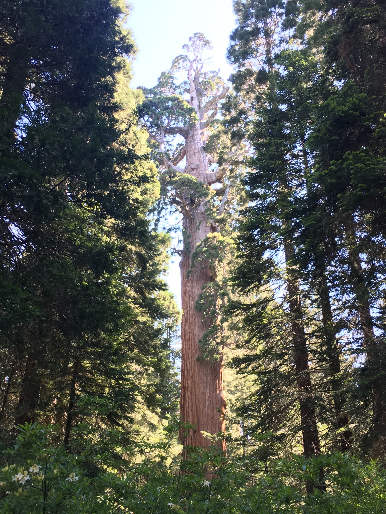
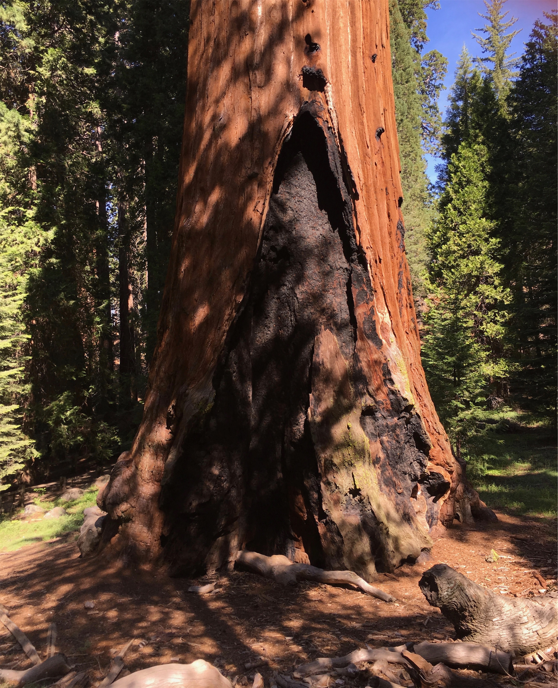
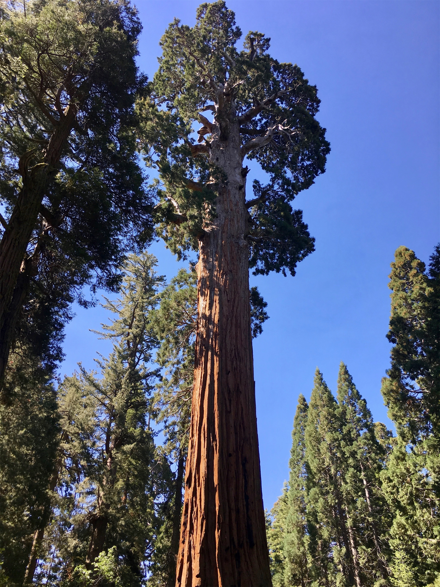
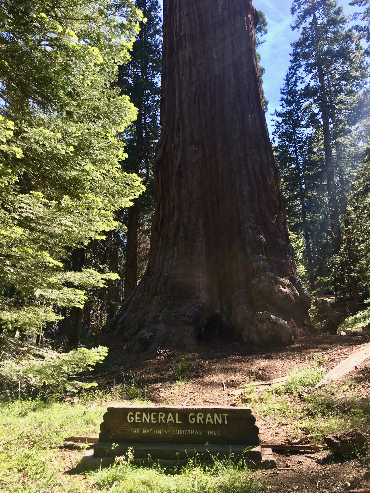
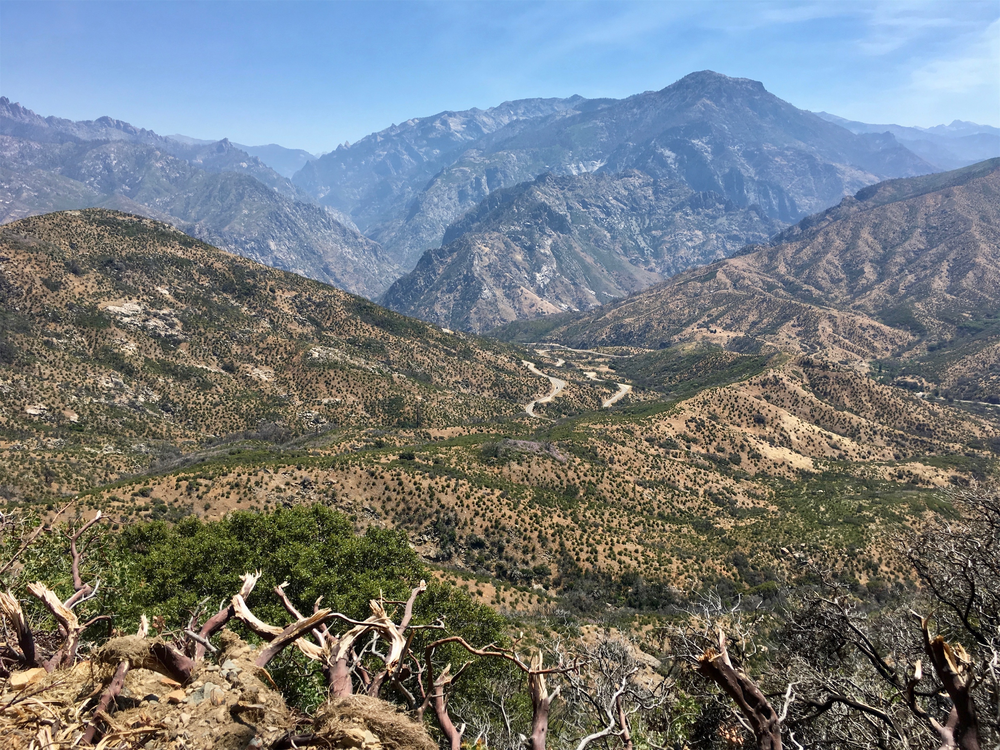

Sunday, Jun 24, 2018, 10:26 AM PDT
Kings Canyon National Park, Badger, CA, United States
82°F Sunny
82°F Sunny
![]()
6/24 Wuksachi Lodge, CA -> Grant Grove -> Kings Canyon Visitor Center, CA 28 mi, 1.5 hr
6/24 Kings Canyon Visitor Center, CA -> Cedar Grove Visitor Center, CA 29 mi, 1.5 hr
6/24 Cedar Grove Visitor Center, CA -> Wuksachi Lodge, CA 54 mi, 2 hr
Trip Total: 4,648 mi
Kings Canyon National Park is glued onto the northern end of Sequoia National Park, and it is divided into a main portion to the east and a separate piece of the park to the west that covers another stash of Sequoias called Grant Grove, which is famous for the third largest tree by volume in the world, General Grant. We first drove there to see the General by hiking the short Grant Tree Trail, This monster is 268 ft tall, 40 ft in diameter, weighs 1,254 tons, and is about 1,700 years old. It has a huge burn scare on the backside.
We then drove to the main feature of the park, the canyon formed by glaciers, 3,000 ft deep, and the Kings River at the bottom. The Scenic Byway starts at about 7,000 ft, and winds its way through the Sierra Nevada mountainside that lines the canyon, eventually dropping to the wild, boulder-filled river at about 4,000 ft. The views were stunning throughout, with many colors of wildflowers and Grizzly Falls. We then made our way back to our lodge in Sequoia for our last night in the park.




